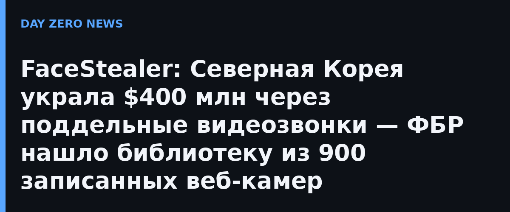

Свежий FLASH-алерт ФБР (AC-111226-MS от 12 ноября) описывает конвейер заражений: сначала взламывается жертва «А» — её компьютер, Telegram и другие мессенджеры, при этом камера молча записывает человека в ожидании видеовстречи. Дальше взломанный аккаунт жертвы «А» сам приглашает её знакомых на «встретиться обсудить сотрудничество»: рассылаются обычные приглашения Calendly и ссылки на ссылку Meeting, маскирующиеся под Zoom и Teams (типокванные домены вроде uu01webzoom.us и teams.livemeet.us). Внутри жертву ждёт копия интерфейса видеосвязи, где «участники» — заранее записанные видеоролики реальных знакомых. ФБР изъяло более 900 таких тайно записанных видео, которые хакеры использовали для имитации совещаний.
Кульминация атаки — сфабрикованная «поломка»: «собеседник» жалуется, что его не слышно, и под видом исправления присылает ссылку на «фикс», который на самом деле устанавливает малварь. После этого компьютер жертвы работает на Пхеньян: из него выгребают криптокошельки, сид-фразы и доступы, причём, по данным ФБР, списания могли начаться через месяцы или даже больше года после заражения — хакеры ждали, пока баланс кошелька подрастёт. Затем малварь записывает уже новую жертву, и цепочка продолжается.
Изначально целью были работники криптоиндустрии и web3, но ФБР фиксирует перенос фокуса на мейнтейнеров open-source: получив доступ к их аккаунтам репозиториев, северокорейские группы (ФБР знает их как Sapphire Sleet, APT38, BlueNoroff, CryptoCore, Stardust Chollima и др.) получают вход в цепочки поставок ПО — а значит доступ к тысячам компаний и пользователей, которые этот софт используют. В Минюсте США кампанию называют «super intelligence-enabled» — то есть-социальное, усиленный ИИ-подделками голоса и видео.
Одновременно с публикацией алерта Минюст США объявил об изъятии облачной инфраструктуры кампании и о судебных шагах к конфискации $1,2 млрд криптовалюты, замороженной по делу о краже у Binance — это крупнейшая сумма такого рода. Ущерб именно FaceStealer за 18 месяцев — более $400 млн.
ФБР рекомендует крипто-сообществу и сопровождающим открытое ПО: настораживаться внезапных видеовстреч даже из проверенных аккаунтов (аккаунт мог быть угнан), не устанавливать никакие «фиксы» по просьбе собеседника, проверять домен видеосервиса по буквам перед входом, перепроверять встречу вторым каналом связи (позвонить человеку напрямую), а корпоративным ИБ-командам — считать видеовстречи с «проблемной камерой» триггером для проверки, а не для установки софта. В России массовых уведомлений о жертвах FaceStealer пока не публиковалось, но угроза цепочкам поставок открытого ПО одинакова для всех: правила двухканального подтверждения и запрет на самодеятельные «фиксы» полезны независимо от флага атакующих.